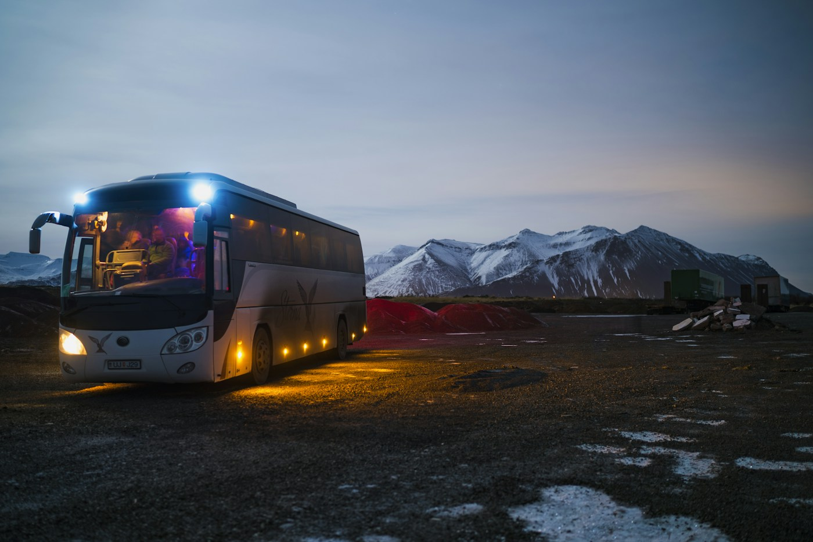
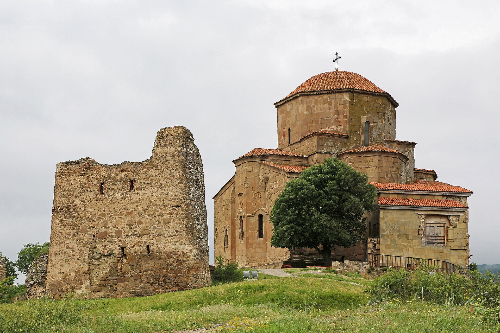
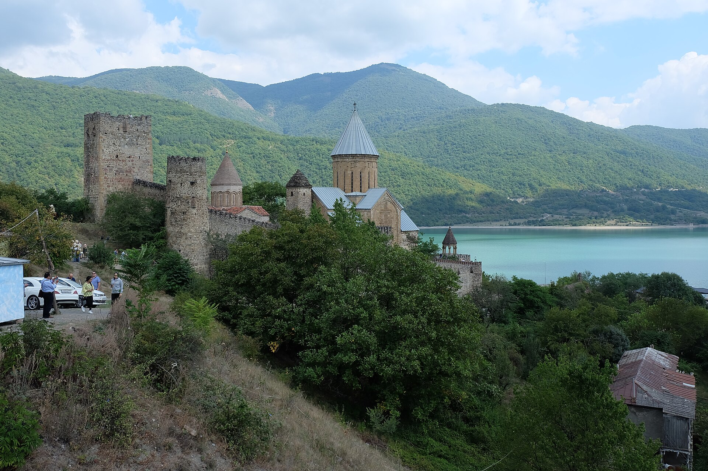
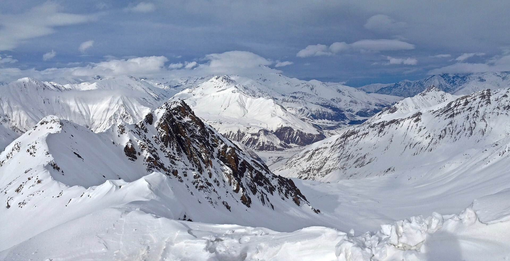
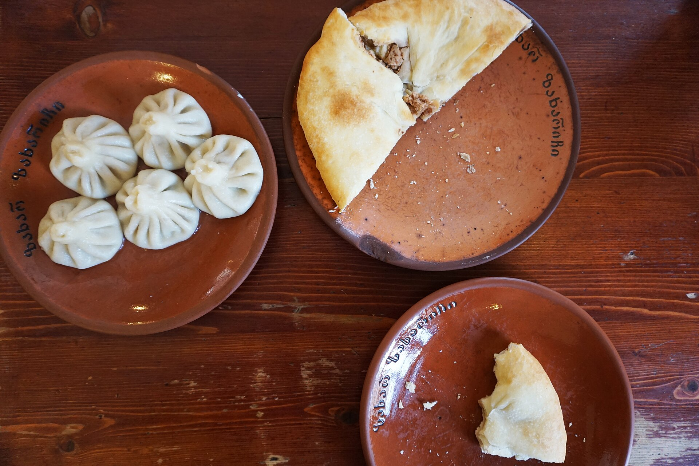
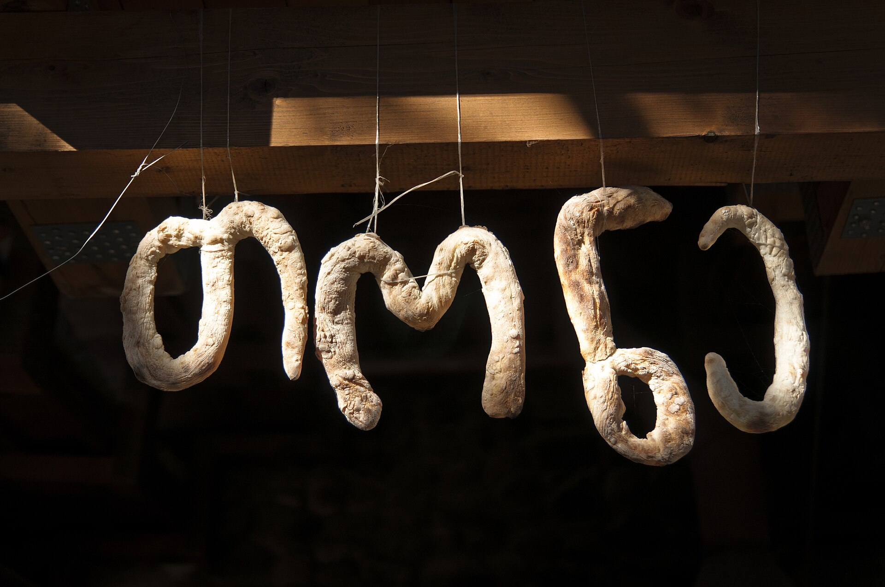

Fundraising & Storytelling
საქართველო, რომელსაც უბრალოდ ვერ დაჯავშნი
ერთი ოჯახი. ერთი საღამო. ერთი ნამდვილი მოგონება.

ერთი ოჯახი. ერთი საღამო. ერთი ნამდვილი მოგონება.

სტუმარი მიჰყვება გრაფიკს, ხედავს იმავეს, რასაც ყველა — ადგილთან პირადი ურთიერთობის დრო აღარ რჩება.

შეიძლება გაჩნდეს კარგი შეხვედრა, მაგრამ არ არსებობს ნდობის, გადახდისა და უსაფრთხოების მკაფიო წესები.
Stumrad.ge ამ ორ ადამიანს აძლევს ერთმანეთის პოვნის გზას.

ისტორია და სულიერი მემკვიდრეობა

გზა, სოფელი და ოჯახური სამზარეულო

ზამთარი, მთა და აქტიური მოგზაურობა

ცოცხალი ტრადიცია და განსაკუთრებული სოფლები
მცხეთის ისტორიული ძეგლები UNESCO-ს მსოფლიო მემკვიდრეობის სიაშია 1994 წლიდან. წყარო: UNESCO
„Stumrad.ge არ ჰპირდება ტურისტს იდეალურ ავთენტურობას. ის ჰპირდება სიმართლეს.“
სად მიდის, რა პირობებია სახლში და რას მოიცავს გამოცდილება.
ვინ არის სტუმარი და როგორ მუშაობს გადახდა.


ადგილობრივი კერძები და საუბარი

პური, ყველი, მოსავალი, ყოველდღიური საქმე

ღამის გათევა, ბუნება, სეზონური გამოცდილება
ოჯახი არ ქმნის ხელოვნურ სანახაობას — ის სტუმარს სთავაზობს იმას, რაც უკვე აქვს: საკუთარ დროს, ცოდნას, სახლს და ცხოვრების წესს.